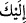
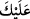

Görmez misin ki bu sûrenin başında “__WORD__ diye hitabetttikten sonra O’nu kullukta ihlas
ile mükellef tutmuştur. Sûrenin sonunda ise “__WORD__ diye hitab ettikten sonra âyeti, “sen
onlar üzerine vekil değilsin” yâni onlardan mes’ul değilsin, buyurarak bu yükü onun
üzerinden hafifletmiştir.
“O halde sen de dini Allah’a has kılarak (ihlâs ile) kulluk et.” İhlâs, kulun başka bir
gaye gütmeksizin niyet ve ameliyle Yaratanına yönelmesidir. Yâni, tâatini şirk ve riya
şâibelerinden tamamıyle arındırarak ibâdet et, demektir. Çünkü, Celâleyn ve başka
tefsirlerde de geçtiği üzere din tâatten ibârettir.
Arâisü’l-Beyân’da şöyle der: “Allah Teâlâ Habîb’ine, O’na kulluk ederken kendi
varlığını, kâinâtı ve ehlini görmeyecek şekilde ibâdet etmesini; rubûbiyyeti müşâhedede
kulluk sınırını aşmamasını emretmiştir. Arştan yere kadar bütün zevk ve hazlar kuldan
sâkıt olduğu zaman hâlis kulluk yoluna girmiş demektir.
Hâlis niyet olmadıkça amelden ne çıkar? Büyüklerden biri demiştir ki: Hâlis ibâdet,
son derece hudû/boyun eğerek emri karşılayıp kabullenmektir. Bu ibâdet nefis ile olur
ki, nefsin ibâdette hâlis kılınması eksiltmekten/eksik yapmaktan uzak durmaktır. Bu
ibâdet kalb ile de olur ki, kalbin ibâdette hâlis kılınması şahısları görmemektir. Bu
ibâdet ruh ile olur ki, ruhun ibâdette hâlis kılınması ise özel davranılma (ihtisâs)
talebinden arınmaktır. Bu ibâdetin ehli her asırda vardır. Çünkü Hz. Peygamber (s.a.)
şöyle buyurmuştur: “Allah Teâlâ dâimâ dininde kendisine tâat edecek birilerini
yetiştirir.”[54]
Kâşifî der ki: “Muhatap Hz. Peygamber (s.a.)’dir. Murad edilen ise tâatlerini şirk ve
riyâdan arındırmakla emredilmiş olan ümmetidir.”
Keşfü’l-esrâr’da ise şöyle geçer: “Allah Rasûlü bu hitab karşısında öyle teeddüp etti
ki Cebrâil gelip şöyle dedi: “Ey Muhammed, melik bir peygamber mi yoksa kul bir
peygamber mi olmayı seçersin.” Hz. Peygamber şöyle dedi: “Ey Rabbim! Kulluk talep
ederim, hükümdarlık istemem. Padişahlık sana âiddir, kulluk ise bize mahsustur. Eğer
padişahlığı seçersem, mülkte kalırım ve benim iftihar vesilem benim mülkümle olur.
Ancak kulluğu seçeyim de Sana bende/köle olayım ve benim övüncüm Sana bende
olmakla olsun. Burada şöyle dedi: “Ben âdemoğlunun efendisiyim, fakat övünmek
yok.”[55] Yâni bizim hiçbir şeyle övünmemiz söz konusu değildir, bizim övüncümüz
Hâlık’ladır. Zira O’nun dışında bizim bir şeyimiz yoktur. Eğer O’nun dışında bir şeyle
iftihar edecek olursak, O’nun dışındakine bakmış oluruz, “O halde sen de dini Allah’a
has kılarak (ihlâs ile) kulluk et.” hitabını bırakmış oluruz. Halbuki bunu bırakmak
emredilmiyor; O’nun dışındakine de bakmak şart değildir. Şüphesiz O’nun dışında bir
şeyle övünmek söz konusu değildir.
Hâfız der ki:
Sevgilinin kapısında yoksul olmayı saltanata bile değişme
Kim bu kapının gölgesini bırakıp da güneş altına girer?